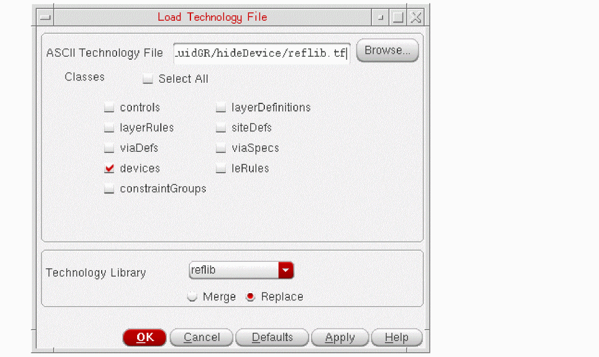

C
Hiding Fluid Guard Ring Devices
You can hide the desired devices from being listed in the Name drop-down list box on the
To hide a device from the desired form, in the tfcDefineDeviceProp section of the technology file, set the vfoGRHideDeviceInForms property to one of the following values:
| Value | Hides the specified device from |
Use the following syntax to set the vfoGRHideDeviceInForms property:
tfcDefineDeviceProp(
(<viewName>"<deviceName1>"vfoGRHideDeviceInForms "<propValue>")
(<viewName>"<deviceName2>"vfoGRHideDeviceInForms "<propValue>")
...
)
Alternatively, you can use the dbOpenCellViewByType SKILL function in the CIW followed by the dbCreateProp or dbReplaceProp SKILL functions. Then, use the dbSave SKILL function to save the modified property.
The following sections explain how to hide and make the hidden FGR devices visible:
- Hiding a Device from Install Guard Ring Form
- Hiding a Device from Create Guard Ring Form
- Making a Hidden Device Visible on Install and Create Forms
Hiding a Device from Install Guard Ring Form
To hide a specific FGR device from the Install Guard Ring form,
- Open the technology file that contains the definitions of the devices you want to hide.
-
Set the
vfoGRHideDeviceInFormsproperty in thetfcDefineDevicePropsection for each device that needs to be hidden. You can use one of the following values for this property:
If you specify any other value or empty string, the specified device continues to be displayed on the form. - Save the technology file.
- From the CIW, choose Tools – Technology File Manager. The Technology Tool Box form appears.
-
In the Manager group box, click Load.
The Load Technology File form appears.
 - Browse and select the ASCII Technology File that you updated for hiding the desired FGR devices.
-
Select the devices check box to load the updated
tfcDefineDevicePropsection. - Select the Technology Library from the drop-down list box.
- Select to Merge or Replace the updates while loading the technology file.
- Click OK.
Now, when you open the Install Guard Ring form, the devices for which you had set the vfoGRHideDeviceInForms property do not appear listed with the other devices. The example in the section below illustrates the steps listed above.
Example of Hiding Devices from Install Guard Ring Form
Suppose you have a technology file reflib.tf that contains definitions for the following devices: LRing, hideFromCreate1, hideFromCreate2, hideFromCreateInstall, hideFromInstall1, and hideFromInstall2.
You now want to hide the following FGR devices from the Install Guard Ring form: hideFromCreateInstall, hideFromInstall1, and hideFromInstall2.
The following images show the different stages of hiding these FGR devices:
Hiding a Device from Create Guard Ring Form
To hide a specific FGR device from the Create Guard Ring form:
- Open the technology file that contains the definitions of the devices you want to hide.
-
Set the
vfoGRHideDeviceInFormsproperty in thetfcDefineDevicePropsection for each device that needs to be hidden. You can use one of the following values for this property:
If you specify any other value or empty string, the specified FGR device continues to be displayed on both the forms. - Repeat steps 3 – 10 described in the Hiding a Device from Install Guard Ring Form section above.
Now, when you open the Create Guard Ring form, the devices for which you had set the vfoGRHideDeviceInForms property do not appear listed with the other devices. The examples in the sections below illustrate the above-listed steps.
Example of Hiding Devices from Create Guard Ring Form
The technology file reflib.tf contains definitions for the following devices: LRing, hideFromCreate1, hideFromCreate2, hideFromCreateInstall, hideFromInstall1, and hideFromInstall2. Suppose, you want to hide FGR devices named hideFromCreate1 and hideFromCreate2 from the Create Guard Ring form. In addition, you want to hide hideFromCreateInstall such that it is not available on both Install Guard Ring and Create Guard Ring forms. The following images show the different stages of hiding these FGR devices:
Making a Hidden Device Visible on Install and Create Forms
To make a previously hidden FGR device visible on either the Install Guard Ring form or the Create Guard Ring form, remove the associated vfoGRHideDeviceInForms property from the technology file and then reload the file in Virtuoso.
Alternatively, use the dbDeletePropByName SKILL function in the CIW and then run the dbSave SKILL function to set the modified setting.
Return to top